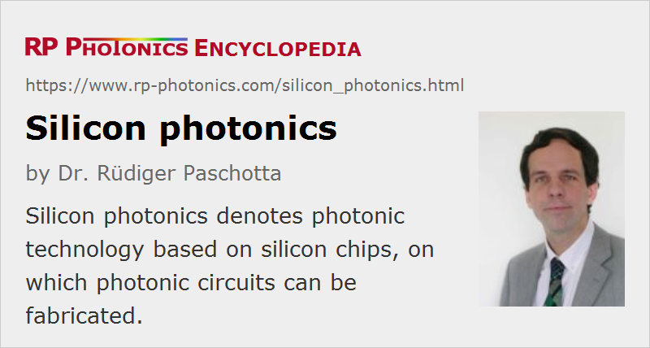

Silicon Photonics
Definition: photonic technology based on silicon chips
German: Silizium-Photonik
Categories: photonic devices, optoelectronics
How to cite the article; suggest additional literature
Author: Dr. Rüdiger Paschotta
For applications in microelectronics, an extremely powerful technology platform based on silicon chips has been developed in the recent decades. This is now the basis of complex microprocessors, large memory circuits, and other digital and analog electronics. With the introduction of the silicon-on-insulator technology [3] it has been demonstrated that photonic functions can be integrated into this technology platform, so that silicon-based photonic integrated circuits became possible. Here, different kinds of optical components can be connected with each other using silicon waveguides [1]. Such circuits could be used e.g. to establish very fast communication between circuit boards, between chips on a board, or even within single chips, e.g. connecting different cores of a microprocessor. There is a strong need for such fast communication links, because the rapid progress of microprocessors may soon be severely limited by the transmission bandwidth capabilities of electronic connections, made e.g. of copper. Optical data transmission allows for much higher data rates and would at the same time eliminate problems resulting from electromagnetic interference. The technology may also be useful for other areas of optical communications, such as fiber to the home.
Silicon photonics can also be considered from the viewpoint of photonics, which is so far normally based on other optical materials. (Silica = amorphous SiO2 is common in photonics, e.g. in silica fibers, but not elementary silicon.) The implementation of silicon-based photonic devices, maybe even electrically pumped silicon lasers and silicon amplifiers, could possibly lead to much smaller and much cheaper photonic devices, making accessible a range of applications which so far have been impossible already for reasons of too high cost.
It is clear that an enormous amount of work, corresponding to huge capital investments, is still required before silicon photonics can be established as a key technology. However, the potential merits motivate big players such as Intel to pursue this development seriously. If it is successful, it can lead to a very powerful technology with huge benefits for photonics and microelectronics and their applications.
Technological Challenges
Although the possible merits of silicon-based photonics are huge, there are also very substantial challenges for such a technology:
- Having an indirect band gap, silicon is a very inefficient light emitter. Although various tricks have been developed to get around this, the laser or amplifier performance of silicon-based devices cannot compete with that for other approaches, based on, e.g., gallium arsenide or indium phosphide.
- The band gap of silicon is also larger than desirable, making it impossible to detect light in the telecom spectral regions around 1.5 and 1.3 μm.
- Silicon has no χ(2) nonlinearity, making it impossible to realize electro-optic modulators with this material.
- The heat dissipated by a laser source on a chip might well be more than is convenient.
- Optical connections often require very precise alignment, which demands improved alignment technologies for efficient mass production.
It is possible to fabricate hybrid devices where the photonic functions are provided by structures made of III–V semiconductors (with a direct band gap of suitable width and electro-optic properties), such as indium phosphide, and these are placed on a silicon chip containing the bulk of the electronic components. One class of techniques is based on epitaxial regrowth procedures, which are complicated and often greatly reduce the yield. Another approach is to apply a sophisticated bonding process to combine a silicon chip containing waveguides with an indium phosphide chip providing the optical gain [17]. Here, precise alignment between the two chips is required. Both technical approaches, leading to silicon hybrid devices, tend to be expensive and are strongly limited in complexity. Therefore, all-silicon solutions, arising from the “siliconization of photonics”, would be more suitable for widespread application.
State of Research
The following paragraphs briefly describe the current state of research concerning basic building blocks of silicon photonics:
Guiding Light
For guiding light in waveguides, silicon is suitable [1, 2]. There are e.g. rib waveguides with oxide cladding, exhibiting propagation losses of well below 1 dB/cm. The transparency range of silicon extends from ≈ 1.1 μm to the far-infrared region. The tight mode confinement allows sharp bends without excessive bend losses. It also enables the use of nonlinearities for certain functions, e.g. amplification via four-wave mixing. Efficient coupling to single-mode fibers, having much larger effective mode areas, is possible with nanotapers [7].
Laser Sources
For laser light sources and for amplifiers, the indirect band gap of silicon is hardly usable. Some progress has been achieved with porous silicon and with silicon nanoparticles in silica, but the performance achieved can not compete with that of e.g. indium-phosphide-based devices.
On the other hand, silicon allows for efficient Raman amplification, because the Raman gain coefficient of silicon is very high and the waveguides confine the mode to a very small area. Although a Raman laser [8, 18, 22] or amplifier [21] still requires an optical pump source, it can be useful for accessing longer wavelength regions, and possibly even to generate multiple wavelengths [22].
Another approach is to provide the active function in a III–V semiconductor material (see above), which is bonded to a silicon waveguide structure; the evanescent field of the silicon waveguide can then be strong enough for efficient amplification [17]. Also, it is possible to fabricate monolithic structures with germanium grown directly on silicon (Ge-on-Si technology), where doped germanium serves as the laser material [25].
If the realization of a laser source on a silicon chip is not feasible, one may use an external fiber-coupled laser diode and couple the light to the silicon chip with a single-mode fiber, using a nanotaper [7].
Modulation of Light
Silicon-based optical modulators can be realized with Mach–Zehnder interferometers and phase modulation via a change in carrier density [12]: injecting carriers with an electrode changes the refractive index in one arm of the interferometer, which translates the phase change into a change in power transmission.
Another possibility is to use a micro-ring resonator [19, 24]. Transmission bandwidths of multiple gigabits per second can be achieved with such devices.
Very compact and energy-efficient devices can also be realized as electroabsorption modulators made with epitaxial germanium on silicon [23].
Photodetection
A silicon photodetector (photodiode) is normally sensitive only for light with wavelengths below 1.1 μm, corresponding to the band gap. Photodetectors for telecommunication wavelengths around 1.5 or 1.3 μm are possible with silicon–germanium alloys (SiGe) [13]. Problems arise from the resulting lattice mismatch, which leads to crystal defects.
A new kind of silicon-based photodetector is the plasmonic internal-photoemission detector (PIPED). It is based on plasmonic effects at a metal–semiconductor–metal (MSM) interface, which forms an optical waveguide: light is absorbed in a metal barrier, generates surface plasmon polaritons (SPP); those generate “hot electrons” in the metal, which then can tunnel through the semiconductor barrier when a voltage is applied between the electrodes. Such photodetectors can be made very small and can have a very high detection bandwidth for light e.g. at 1550 nm wavelength [28].
Terahertz Silicon Photonics
Silicon technology can not only be used for working with light, but also with terahertz radiation. For example, one can realize plasmonic internal-photoemission detectors (PIPEDs) on the silicon photonics platform, which can be used as terahertz detectors [29].
Suppliers
The RP Photonics Buyer's Guide contains 6 suppliers for silicon photonics.
Questions and Comments from Users
Here you can submit questions and comments. As far as they get accepted by the author, they will appear above this paragraph together with the author’s answer. The author will decide on acceptance based on certain criteria. Essentially, the issue must be of sufficiently broad interest.
Please do not enter personal data here; we would otherwise delete it soon. (See also our privacy declaration.) If you wish to receive personal feedback or consultancy from the author, please contact him e.g. via e-mail.
By submitting the information, you give your consent to the potential publication of your inputs on our website according to our rules. (If you later retract your consent, we will delete those inputs.) As your inputs are first reviewed by the author, they may be published with some delay.
Bibliography
| [1] | R. A. Soref and J. P. Lorenzo, “Single-crystal silicon: a new material for 1.3 and 1.6 μm integrated-optical components”, Electron. Lett. 21 (21), 953 (1985), doi:10.1049/el:19850673 |
| [2] | B. Schüppert et al., “Optical channel waveguides in silicon diffused from GeSi allow”, Electron. Lett. 25 (22), 1500 (1989), doi:10.1049/el:19891007 |
| [3] | M. Bruel, “Silicon on insulator material technology”, Electron. Lett. 31 (14), 1201 (1995), doi:10.1049/el:19950805 |
| [4] | B. Jalali et al., “Advances in silicon-on-insulator optoelectronics”, J. Sel. Top. Quantum Electron. 4 (6), 938 (1998), doi:10.1109/2944.736081 |
| [5] | D. A. B. Miller, “Optical interconnects to silicon”, J. Sel. Top. Quantum Electron. 6 (6), 1312 (2000), doi:10.1109/2944.902184 |
| [6] | Online publications by Intel, see http://www.intel.com/go/sp/ |
| [7] | V. R. Almeida et al., “Nanotaper for compact mode conversion”, Opt. Lett. 28 (15), 1302 (2003), doi:10.1364/OL.28.001302 |
| [8] | H. Rong et al., “A continuous-wave Raman silicon laser”, Nature 433, 725 (2005), doi:10.1038/nature03346 |
| [9] | G. T. Reed, “Device physics: The optical age of silicon”, Nature 427, 595 (2004), doi:10.1038/427595b |
| [10] | A. Liu et al., “A high speed silicon optical modulator based on a metal–oxide semiconductor capacitor”, Nature 427, 615 (2004), doi:10.1038/nature02310 |
| [11] | O. Boyraz and B. Jalali, “Demonstration of a silicon Raman laser”, Opt. Express 12 (21), 5269 (2004), doi:10.1364/OPEX.12.005269 |
| [12] | L. Liao et al., “High speed silicon Mach–Zehnder modulator”, Opt. Express 13 (8), 3129 (2005), doi:10.1364/OPEX.13.003129 |
| [13] | L. Liao et al., “Tensile strained Ge p–i–n photodetectors on Si platform for C and L band telecommunications”, Appl. Phys. Lett. 87, 011110 (2005), doi:10.1063/1.1993749 |
| [14] | Y.-H. Kuo et al., “Strong quantum-confined Stark effect in germanium quantum-well structures on silicon”, Nature 437, 1334 (2005), doi:10.1038/nature04204 |
| [15] | B. Jalali et al., “Raman-based silicon photonics”, J. Sel. Top. Quantum Electron. 12 (3), 412 (2006), doi:10.1109/JSTQE.2006.872708 |
| [16] | H. Rong et al., “Monolithic integrated Raman silicon laser”, Opt. Express 14 (15), 6705 (2006), doi:10.1364/OE.14.006705 |
| [17] | A. W. Fang et al., “Electrically pumped hybrid AlGaInAs-silicon evanescent laser”, Opt. Express 14 (20), 9203 (2006), doi:10.1364/OE.14.009203 |
| [18] | H. Rong et al., “Low-threshold continuous-wave Raman silicon laser”, Nature Photon. 1 (4), 232 (2007), doi:10.1038/nphoton.2007.29 |
| [19] | Q. Xu et al., “12.5 Gbit/s carrier-injection-based silicon micro-ring silicon modulators”, Opt. Express 15 (2), 430 (2007), doi:10.1364/OE.15.000430 |
| [20] | B. Jalali, “Teaching silicon new tricks”, Nature Photon. 1 (4), 193 (2007), doi:10.1038/nphoton.2007.35 |
| [21] | V. Raghunathan et al., “Demonstration of a mid-infrared silicon Raman amplifier”, Opt. Express 15 (22), 14355 (2007), doi:10.1364/OE.15.014355 |
| [22] | H. Rong et al., “A cascaded silicon Raman laser”, Nature Photon. 2, 170 (2008), doi:10.1038/nphoton.2008.4 |
| [23] | J. Liu et al., “Waveguide-integrated, ultralow-energy GeSi electro-absorption modulators”, Nature Photon. 2, 433 (2008), doi:10.1038/nphoton.2008.99 |
| [24] | S. Manipatruni et al., “Wide temperature range operation of micrometer-scale silicon electro-optic modulators”, Opt. Lett. 33 (19), 2185 (2008), doi:10.1364/OL.33.002185 |
| [25] | J. Liu et al., “Ge-on-Si laser operating at room temperature”, Opt. Lett. 35 (5), 679 (2010), doi:10.1364/OL.35.000679 |
| [26] | Special Issue on silicon photonics in IEEE Sel. Top. Quantum Electron. 16 (1) (2010) |
| [27] | A. Rickman, “The commercialization of silicon photonics”, Nature Photon. 8, 579 (2014), doi:10.1038/nphoton.2014.175 |
| [28] | S. Muehlbrandt et al., “Silicon-plasmonic internal-photoemission detector for 40 Gbit/s data reception”, Optica 3 (7), 741 (2016), doi:10.1364/OPTICA.3.000741 |
| [29] | T. Harter, “Silicon-plasmonic integrated circuits for terahertz signal generation and coherent detection”, Nature Photon. 12, 625 (2018), doi:10.1038/s41566-018-0237-x |
See also: photonics, photonic integrated circuits, integrated optics, optoelectronics, channel waveguides, Raman lasers, optical amplifiers, optical modulators
and other articles in the categories photonic devices, optoelectronics

This encyclopedia is authored by Dr. Rüdiger Paschotta, the founder and executive of RP Photonics Consulting GmbH. How about a tailored training course from this distinguished expert at your location? Contact RP Photonics to find out how his technical consulting services (e.g. product designs, problem solving, independent evaluations, training) and software could become very valuable for your business!
|  |
If you like this page, please share the link with your friends and colleagues, e.g. via social media:
These sharing buttons are implemented in a privacy-friendly way!